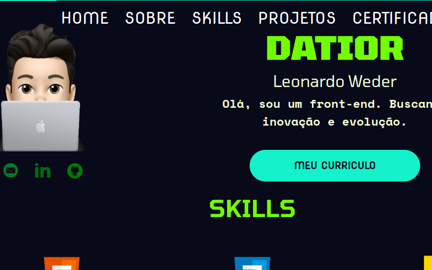

<style>
    .projetos_home {
        display: flex;
        flex-direction: column;
        padding: 6em 0;
        background: var(--cor-branca);
    }

    .projeto_principal {
        display: flex;
        justify-content: space-around;
    }
    .imagem_projeto_principal {
        width: 28%;
        perspective: 1500px;
    }
    
    .imagem_projeto_principal img {
        width: 100%;
        border-radius: 24px;
    }

    .textos_projeto_principal {
        width: 40%;
    }

    #projeto_principal2 {
        flex-direction: row-reverse;
        margin-top: 14em;
    }

</style>

<Section class="projetos_home">
    <div class="projeto_principal" id="projeto_principal1">
        <div class="imagem_projeto_principal">
            
        </div>
        <div class="textos_projeto_principal">
            <h3>Meu primeiro portifólio</h3>
            <p>Esse foi meu primeiro portifólio feito em 2022. Na epoca tinha mais conhecimento de front-end e na verdade ele já existia antes com HTML e CSS puro, onde depoís eu migrei ele para React.</p>
        </div>
    </div>
    <div class="projeto_principal" id="projeto_principal2">
        <div class="imagem_projeto_principal">
            
        </div>
        <div class="textos_projeto_principal">
            <h3>Meu primeiro portifólio</h3>
            <p>Esse foi meu primeiro portifólio feito em 2022. Na epoca tinha mais conhecimento de front-end e na verdade ele já existia antes com HTML e CSS puro, onde depoís eu migrei ele para React.</p>
        </div>
    </div>
</Section>